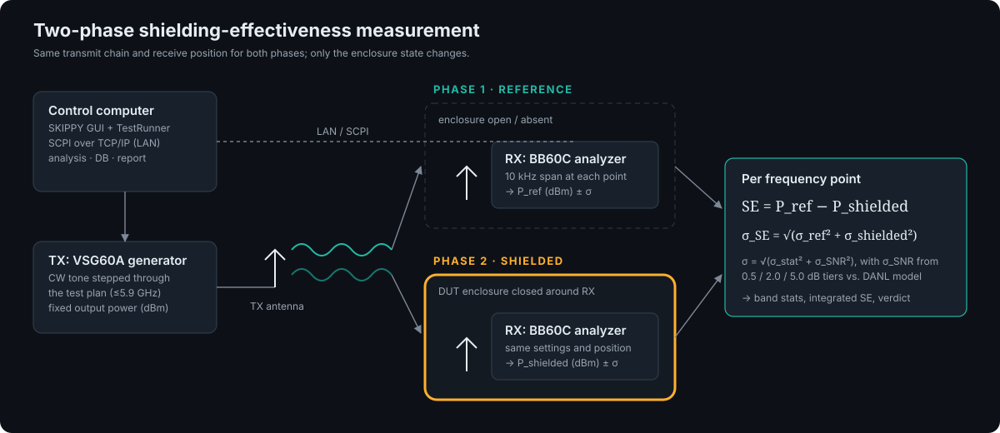
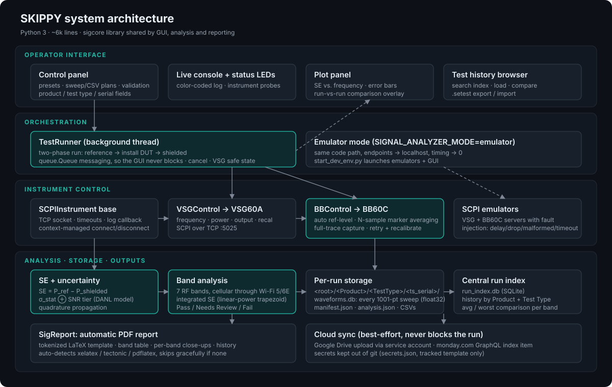
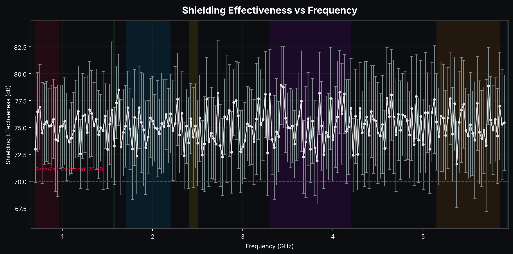
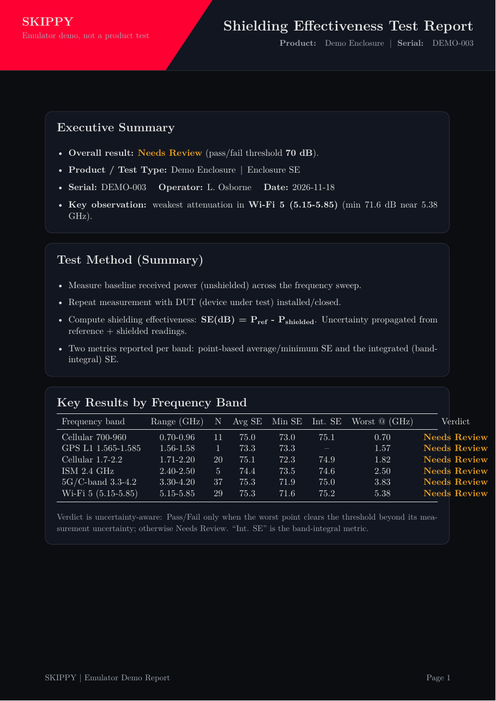

Portfolio · RF test automation
Landon Osborne, R&D Project Coordinator, MOS Equipment (Mission Darkness / Generation Faraday)
2024–2026 · Python · SCPI/TCP · SQLite · LaTeX · 100 MHz–6 GHz
The problem
Measurement physics

System design

sigcore) is the single source of truth for hardware, math, bands and config4Instrument control
SCPIInstrument base class.:FREQ:CENT f Hz; SPAN 10kHz
:SENS:POW:RF:RLEV −8 # probe
:CALC:MARK:Y? # → auto-range
for i in 1..N:
:CALC:MARK:Y? # peak power
:TRAC:DATA? # full sweep → DB
:TRAC:CLE
mean, σ → ⊕ SNR term → P ± σ
Measurement uncertainty
σstat: scatter across the N averaged samples.
σSNR: 0.5 / 2.0 / 5.0 dB depending on the margin above a frequency-dependent noise-floor (DANL) model.
Deep attenuation pushes the shielded reading toward the noise floor, which is exactly where the error grows. The model captures that.
worst point clears the threshold by more than its uncertainty
threshold sits inside the worst point's error bar, so the run is flagged for a human instead of forced into a false pass or fail
worst point misses the threshold by more than its uncertainty
Analysis

Data system
<root>/<Product>/<TestType>/<timestamp_serial>/ with test plan, results, band CSV, plots, manifest, analysis and report.
Per-run SQLite waveforms.db: every averaged sweep (1001 points) stored as a compact float32 blob, about 4 KB per sweep, so new analyses can run on old tests.
Central run_index.db with per-band summaries. Each new run is compared with the average and worst case of prior runs of the same product and test type.
Searchable test index, run-vs-run overlay, .setest export/import, plus best-effort Google Drive upload and a monday.com index item per run.
Automatic reporting

analysis.json. The report only renders it and never re-derives a number.xelatex, tectonic or pdflatex; without one it still writes a ready-to-compile bundle.Sample shown: emulator demo, neutral branding. Full PDF ↗
Proof: emulator demo run
0.7–5.9 GHz in 25 MHz steps, 3-sample averaging, against a simulated ~75 dB enclosure. Three runs build the history the report compares against.
| Band | Avg | Min | Int. | Verdict |
|---|---|---|---|---|
| Cellular 700–960 | 75.0 | 73.0 | 75.1 | REVIEW |
| GPS L1 | 73.3 | 73.3 | – | REVIEW |
| Cellular 1.7–2.2 | 75.1 | 72.3 | 74.9 | REVIEW |
| ISM 2.4 GHz | 74.4 | 73.5 | 74.6 | REVIEW |
| 5G / C-band | 75.3 | 71.9 | 75.0 | REVIEW |
| Wi-Fi 5 | 75.3 | 71.6 | 75.2 | REVIEW |
Every minimum is nominally above the 70 dB threshold, but each sits within 3–4 dB of uncertainty of it, so the honest call is Needs Review, not Pass.
Engineering for reliability
SCPI servers that impersonate both instruments, so the full system runs and is tested with no hardware attached.
Live CLI to add latency, drop or corrupt a response, disconnect or time out, to prove the retry and error paths before they happen on the bench.
One environment flag switches endpoints to localhost and settle times to zero. No forked “test version” of the driver.
Trace capture, report compile and cloud sync are all best-effort. None of them can void a valid measurement or lose a local run.
Hardware runs on a worker thread with queue messaging; the UI thread never touches the instruments.
Built with AI coding agents under a written spec: SCPI sequences, timing and uncertainty math change only with my sign-off.
Impact
• Calibration traceability for the antennas and cables
• Automated regression tests against the emulators in CI
• Antenna-factor and path-loss corrections for formal IEEE 299 reports
• Multi-position runs for leak mapping